01 Mangueo
Barrido de la vegetación herbácea y arbustiva con manga entomológica. Captura las arañas que viven en herbazal: cazadoras como Oxyopes o tejedoras pequeñas como Mangora acalypha.
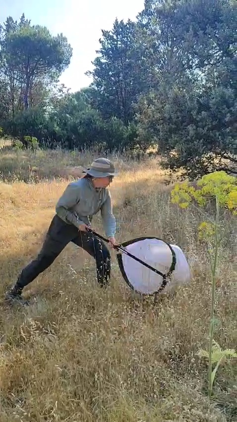
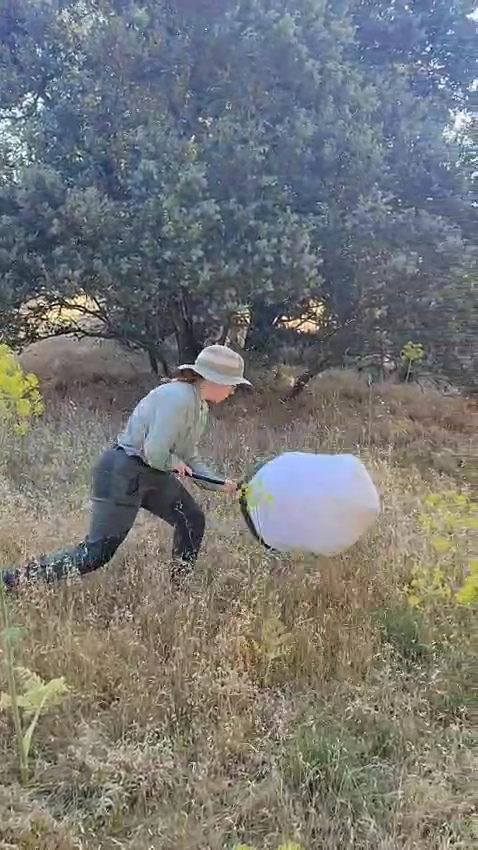
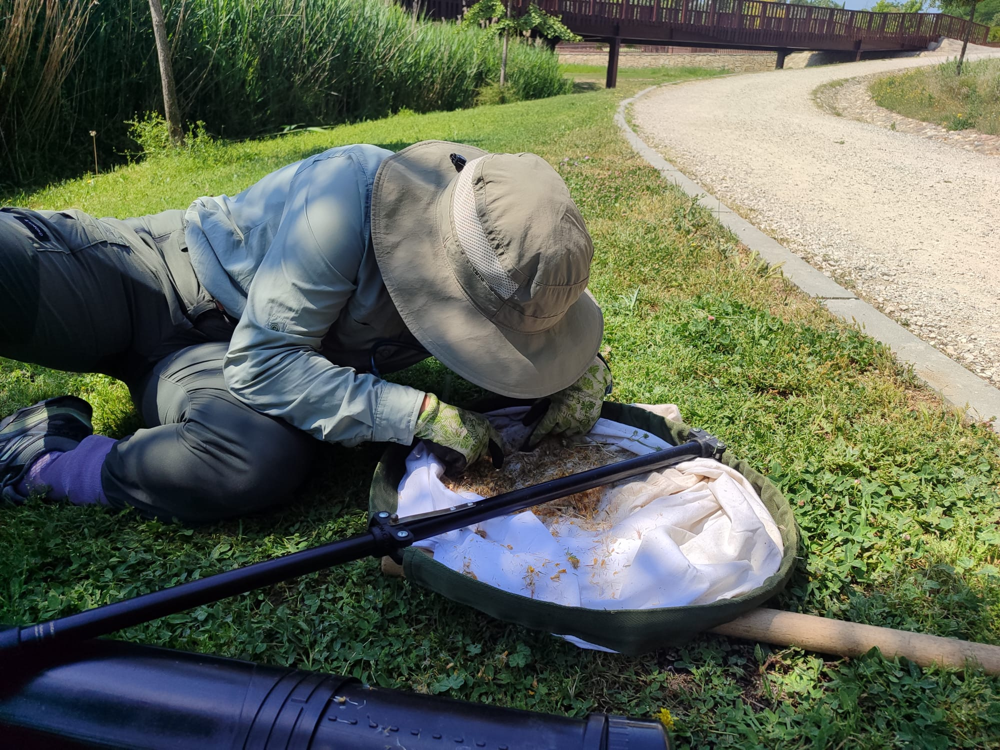
02 Trampas de caída (pitfall)
Recipientes enterrados a ras de suelo que capturan arañas del estrato de suelo, activas día y noche: Lycosidae como Pardosa o Gnaphosidae como Zelotes. Una vez recogidas se han de limpiar bajo la lupa para eliminar tierra, hojas y separar las arañas presentes en la muestra.
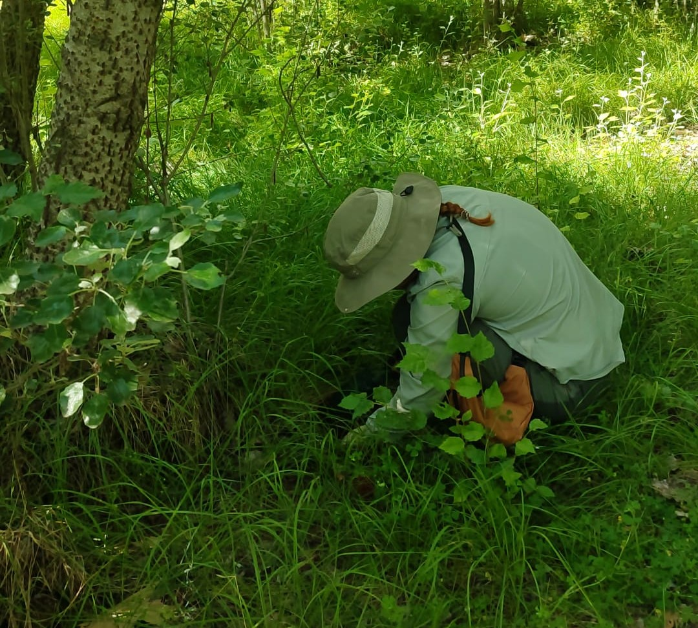
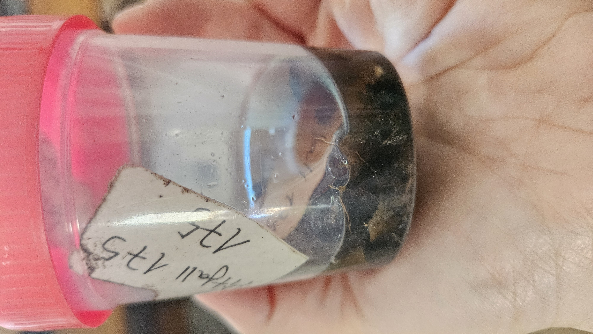
03 Vareo
Golpeo de ramas sobre un paraguas entomológico para hacer caer las arañas de las copas de los árboles, como Tmarus y Ozyptila de la familia Thomisidae.
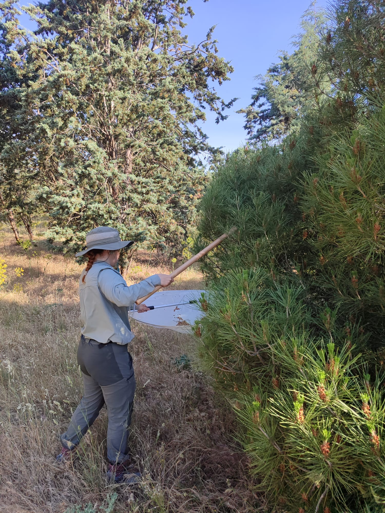
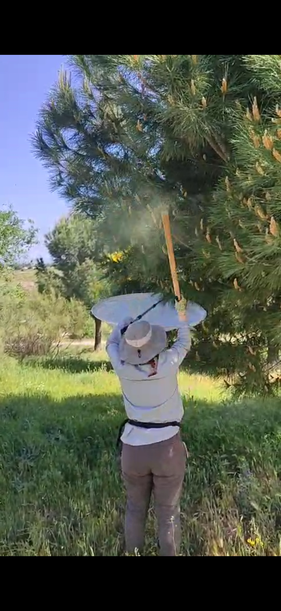

04 Identificación
Cada individuo se examina bajo lupa binocular y se determina con claves taxonómicas, llegando a especie siempre que el estado de la muestra y los caracteres diagnósticos lo permitan.
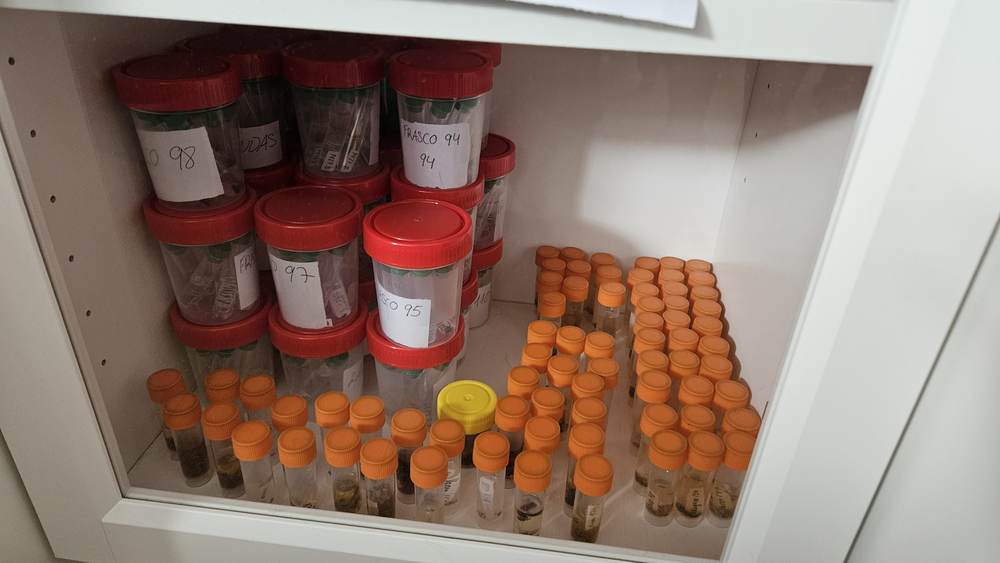
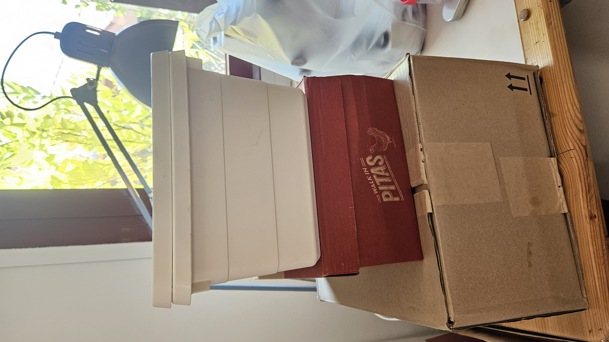
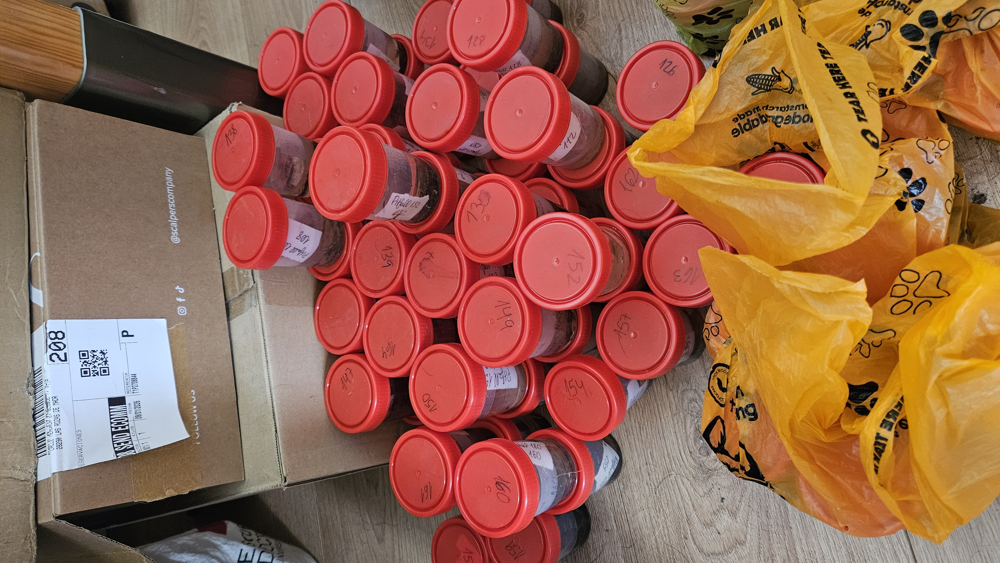
05 Complicaciones del muestreo
El trabajo de campo no siempre sale según lo previsto. Entre las principales dificultades estuvieron las inclemencias climáticas, la sustracción de pitfall y la alteración por el paso de animales o de personas (que muchas veces contaminan el espacio con desechos).
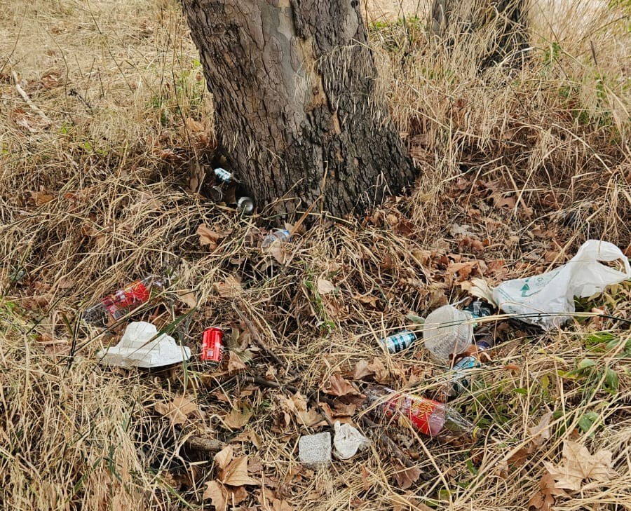
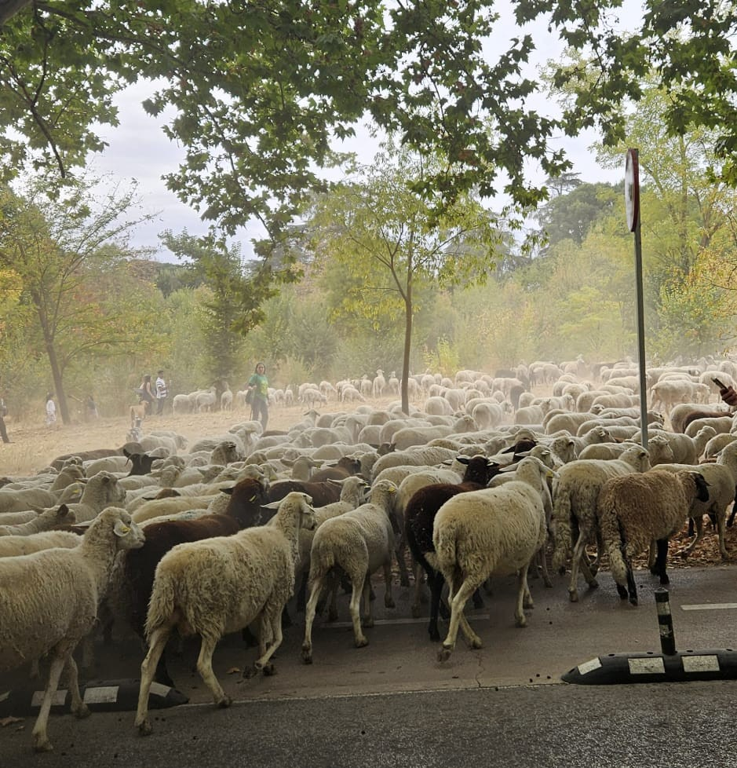
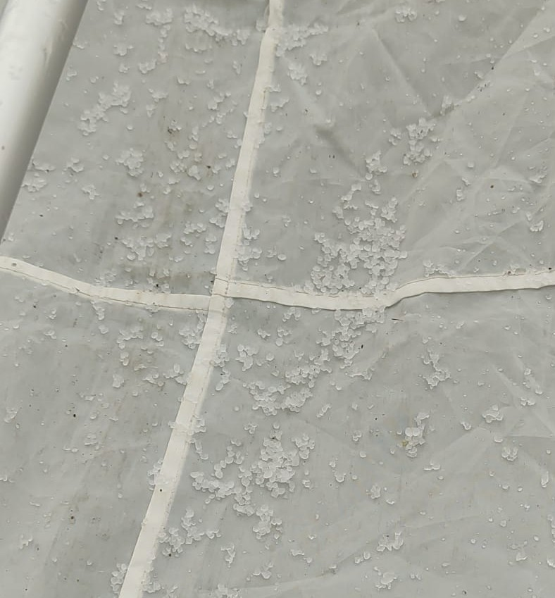